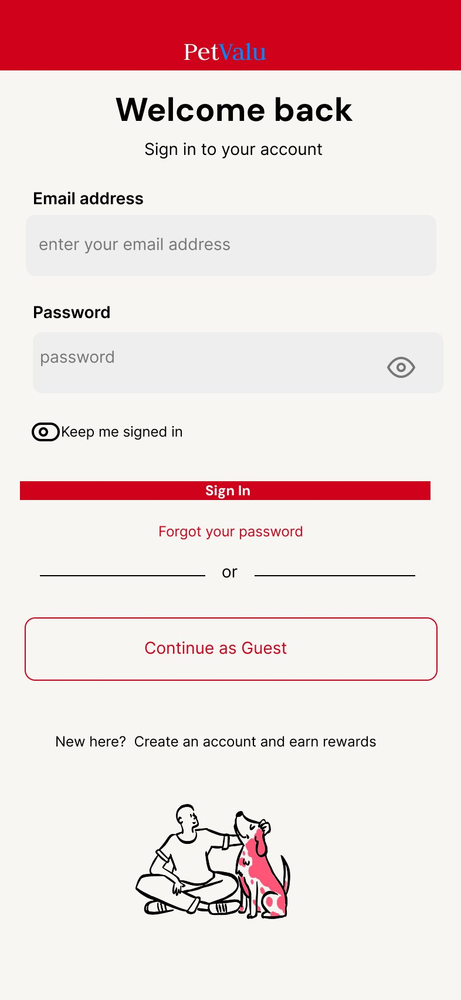
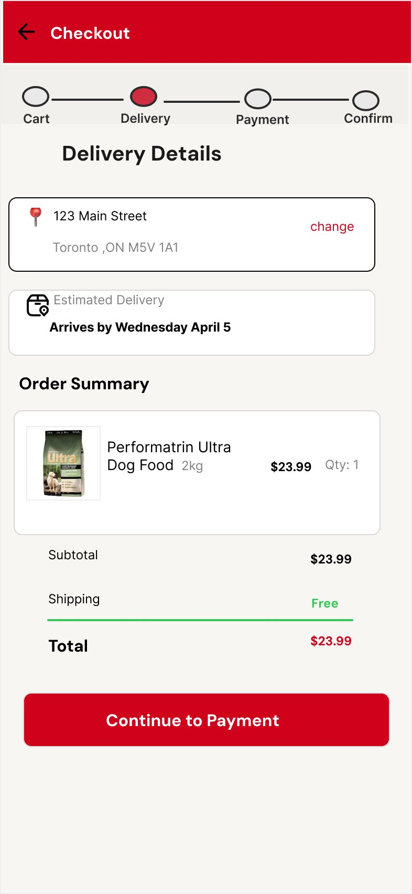
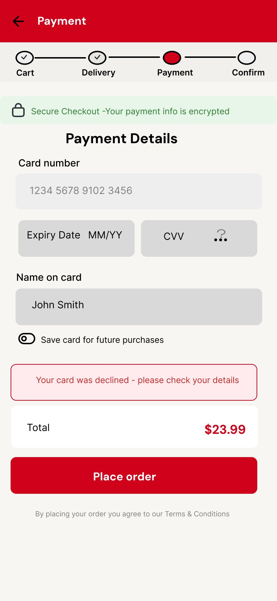

A self-directed concept redesign of Pet Valu's mobile login and checkout experience — built on real customer research, solving real user pain points, within real brand constraints.
Role
UX Designer (Concept)
Tool
Figma
Type
Mobile-First / UX Research
Year
2026
The Problem
Pet Valu's online customers were frustrated and leaving.
Pet Valu is one of Canada's largest pet specialty retailers with 800+ stores nationwide. But their online experience was letting down their most loyal customers — the Devoted Pet Lovers (DPL).
Before designing anything, I spent time on petvalu.ca on mobile and researched real customer reviews on Trustpilot and the Better Business Bureau. Three critical pain points emerged consistently.
01
Repeated Logouts
Customers were unexpectedly logged out mid-session, forced to reset passwords and restart their shopping journey.
02
Checkout Confusion
No visibility into where they were in checkout — leading to abandoned carts and repeated payment attempts.
03
Vague Delivery Info
"5–7 business days" with no concrete date — causing anxiety and eroding trust with loyal customers.
Research & Insights
What real customers were saying.
I analyzed reviews across Trustpilot and the BBB to understand the real emotional experience. The feedback was consistent — the website was breaking trust with the very customers who loved the brand most.
🔐
"I keep getting logged out and have to reset my password every time"
Design fix: Persistent "Keep me signed in" toggle
💳
"The payment page kept glitching and I didn't know if my order went through"
Design fix: Exact delivery date — "Arrives by Wednesday April 5"
👤
"It kept forcing me to check out as a guest"
Design fix: Guest as secondary option, account framed as rewarding
The Redesign
3 screens. 3 real problems solved.
Every screen decision came directly from a real customer complaint. Designed in Figma, mobile-first, within Pet Valu's existing brand guidelines with full AODA accessibility compliance.
Screen 1 — Login

"Keep me signed in" toggle addresses #1 complaint. Guest checkout is secondary — account creation framed as earning rewards.
Screen 2 — Checkout

4-step progress bar eliminates checkout anxiety. "Arrives by Wednesday April 5" replaces vague "5–7 business days."
Screen 3 — Payment

Security trust badge builds confidence. Friendly error state — "Your card was declined — please check your details" — replaces generic error codes.
Login Screen
"Keep me signed in" Toggle
Directly solves the #1 complaint. Gives users control and immediately rebuilds trust in the experience.
Checkout Screen
Exact Delivery Date
"Arrives by Wednesday April 5" — a concrete date that sets clear expectations and removes shipping anxiety.
Payment Screen
Friendly Error State
Plain language error message tells users what went wrong and what to do — not a generic error code.
Based on benchmark data from similar e-commerce checkout optimizations, here's the estimated impact of the proposed redesign:
25%
Reduced cart abandonment
Progress indicator + exact delivery dates shown to decrease checkout drop-off based on Baymard Institute data.
40%
Fewer login support tickets
"Keep me signed in" toggle addresses the single most-reported complaint, reducing password reset volume.
15%
Higher account signups
Reframing "Create account" as rewards-driven rather than a barrier — estimated lift in account creation at checkout.
*Estimates based on industry benchmarks (Baymard Institute, Nielsen Norman Group). Real validation would require A/B testing with Pet Valu's actual customer base.
Key Takeaways
What I learned.
Research before design
Reading real customer reviews before opening Figma completely changed what I designed. Every screen decision came from a real complaint — not what looked good.
Constraints are creative
Working within Pet Valu's brand guidelines pushed me to focus on UX improvements rather than visual ones. The red, the logo, the style — all kept intact.
Error states matter
Most designers only design the happy path. Designing what happens when something goes wrong — and making it friendly — is where real UX value is created.